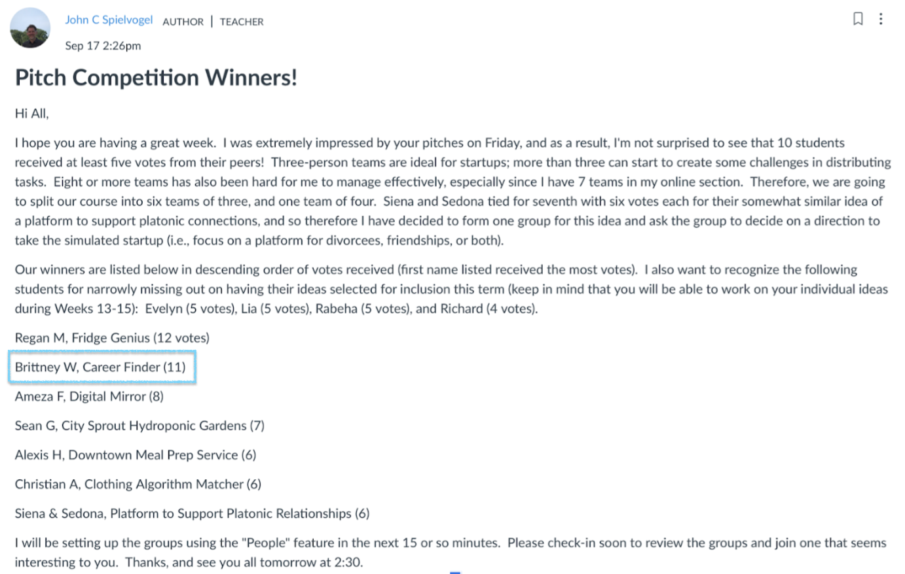
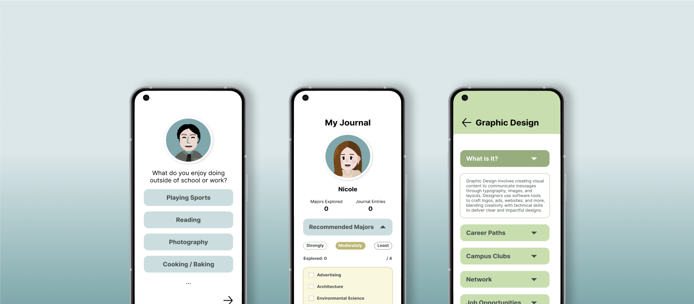
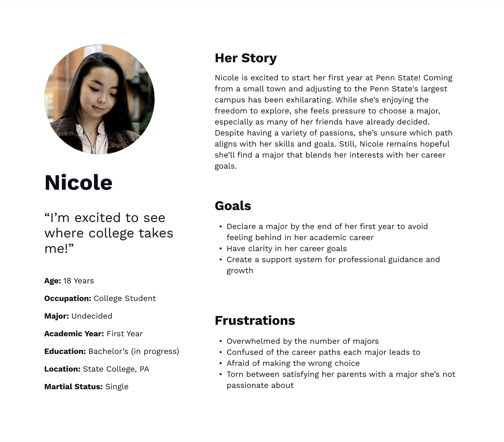
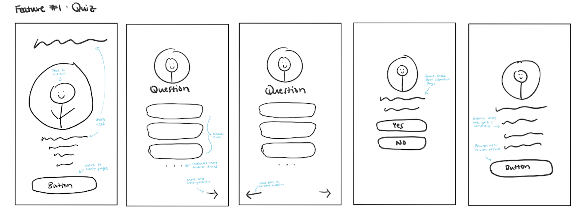
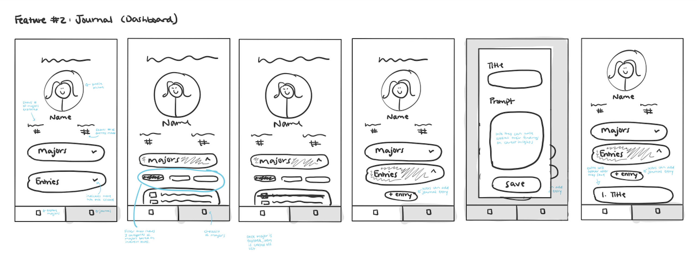
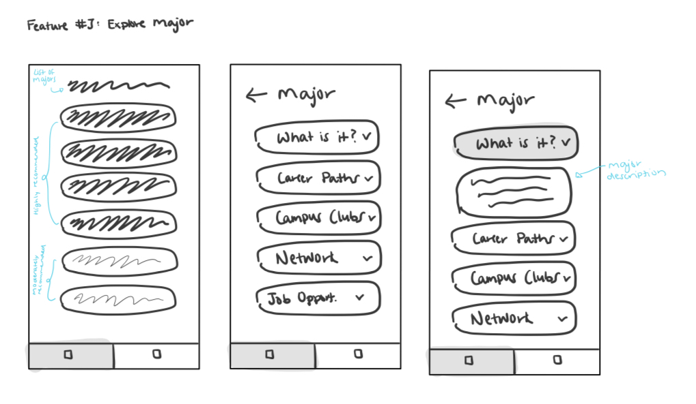
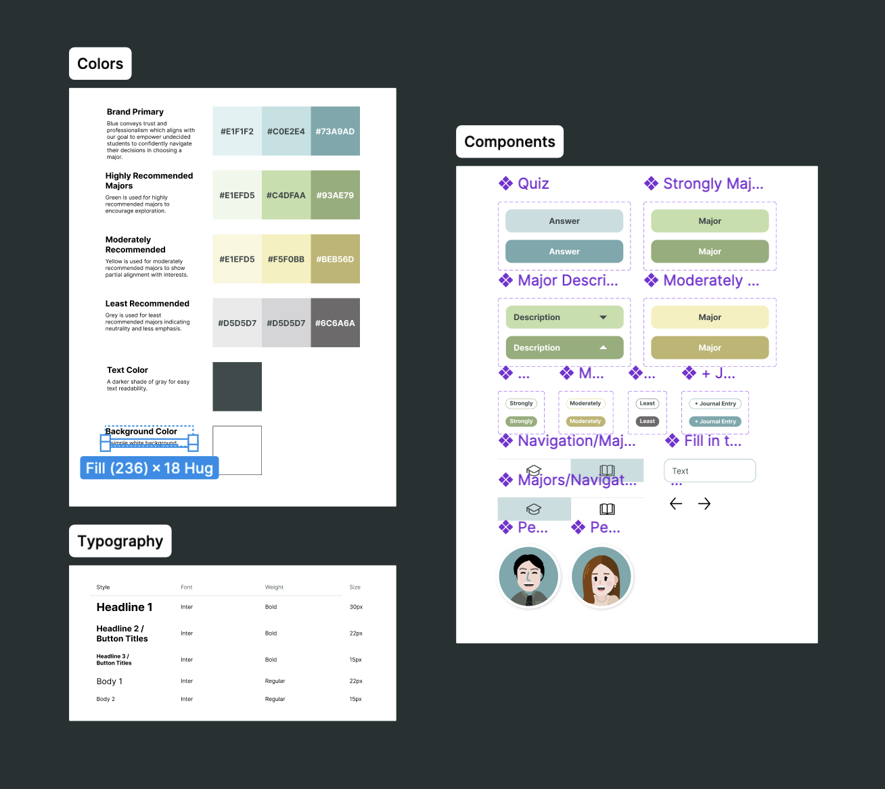
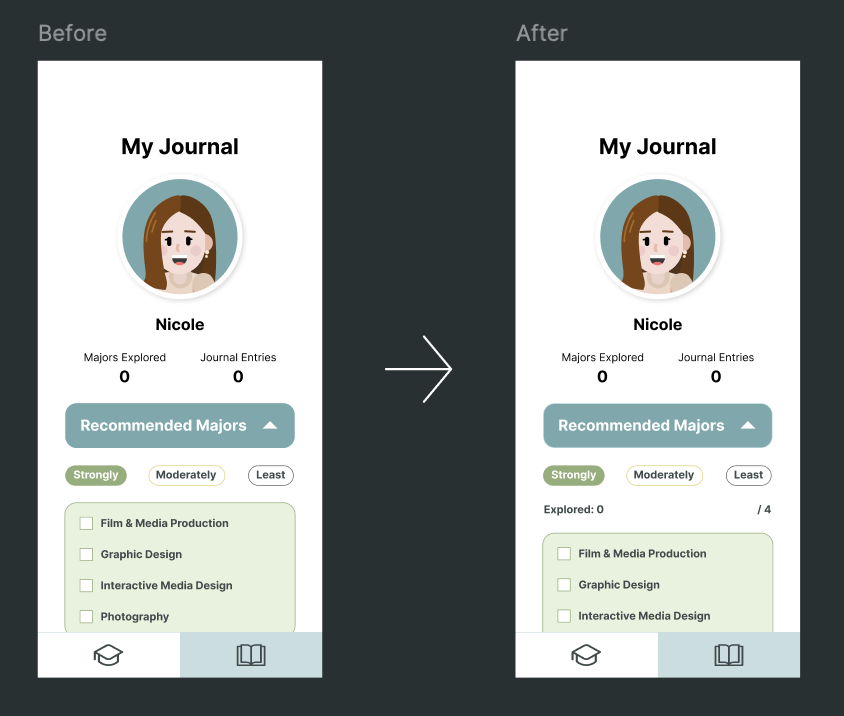
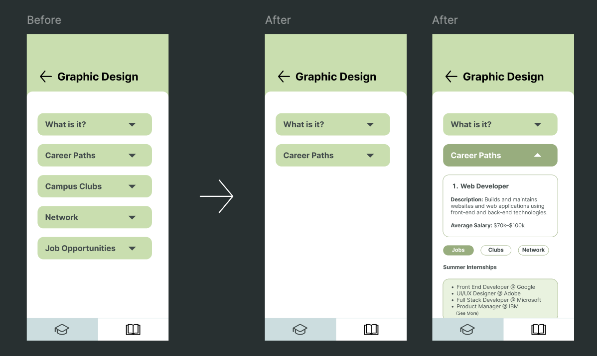

Over the first three weeks, I deepened my understanding of lean startup principles, building on previous Penn State courses and insights from The Mom Test and class materials. I integrated design thinking throughout, particularly in key areas such as user research, problem definition, prototyping, and testing.
My startup idea stems from my personal journey of feeling uncertain about my career path. As a freshman, I felt pressured to know exactly what I wanted to do for the rest of my life, even before gaining any real experience in different fields.
Now, as a senior, I've developed an app that I wish I had during my freshman year—something that would help me explore and decide on a career path more effectively.
Here's my pitch.

CAS251: Major Match
How can students experience majors of interests prior to declaring a major?

Role
UX Designer
Duration
Aug - Dec 2024
Team
3 Undergraduate Students
Project Overview
For my Shark Tank Simulation class at Penn State University last semester, we were tasked with addressing a societal challenge. I shared my personal challenges of navigating the complex process of selecting a major. We adopted the LEAN methodology and I applied design thinking to guide our process. Our goal was to develop an app that would help undecided students easily navigate their career paths.
Result
• Second most voted idea out of 20+ proposals
• Designed & developed a hi-fi Figma prototype, features include quiz, personalized list of majors, & journal
• Conducted 4 out of 12 semi-structured interviews and facilitated focus group of 20+ students
Timeline
Establishing Framework
User Research
I conducted semi-structured interviews across various grade levels, starting with a focus group of over 20 students, followed by 12 one-on-one interviews, 4 of which I personally led.
Our goal was to understand the experiences of undergraduates in selecting their majors, regardless of their academic year or career path.
I then organized the data using affinity mapping in Miro, where clear patterns emerged that highlighted key insights into the challenges students face.
The findings will guide the development of a solution that better supports students in aligning their academic choices with their interests, goals, and passions.
Through user research and data analysis, we shifted the focus from helping students find a career to helping them choose the right major. The overwhelming number of options, fear of making the wrong choice, and external pressures revealed that students need more guidance in selecting a major that aligns with their true interests.
This led to the transition from a "career finder" tool to a "major match" solution, designed to address students' academic decisions and alleviate their concerns.
Based on these insights, I developed a user persona that represents the journey of an undecided college student—someone navigating the pressure and uncertainty of making the right decision about their future.

Design & Development
After gathering user insights, I created a lo-fi prototype with a journal-like design, aimed at helping students easily organize and reflect on their quiz results. This simple, structured layout offers a more personal and engaging way to explore academic and career options.



Using Figma, I developed a high-fidelity, interactive prototype that combines accessibility with functionality. It provides a seamless, engaging experience for students as they explore their major options, ensuring the tool is both user-friendly and effective.
I built a design system with consistent typography, reusable UI components, and a cohesive color palette to ensure a unified, professional look and feel. This system ensures a smooth, intuitive user experience and helps scale the app for future growth.

Testing & Iterations
After I conducted 4 usability tests, I identified key areas for improvement and made targeted updates to enhance navigation, organization, and overall user flow.
Revision #1: Progress Tracking
Feedback from users highlighted the need for better progress tracking. In response, I added a counter displaying the number of majors explored out of the total, giving users a clearer sense of their progress as they navigated through options.

Revision #2: Streamlined Navigation
Users found the process of clicking through multiple categories tedious. To improve this, I consolidated the major details—such as career paths and job prospects—into a single section with a toggle feature, streamlining navigation and making it easier to access information quickly.

Reflections
Two key instances from this project highlighted the importance of having rational behind every decision to avoid unnecessary revisions and delays.
While initially focusing on simplicity and functionality, I realized the result lacked visual appeal, which led me to redesign the interface to balance aesthetics and usability.
After our brainstorming session left the audience confused, we recognized the need for better team alignment. We regrouped, shared ideas, and combined the best elements to create a clearer, more unified vision for the prototype.
In conclusion, I found this project particularly rewarding as it demonstrated how the principles of design thinking extend beyond my UX classes. Both methodologies shared similar approaches, focusing on creating functional prototypes and validating them before investing significant resources.